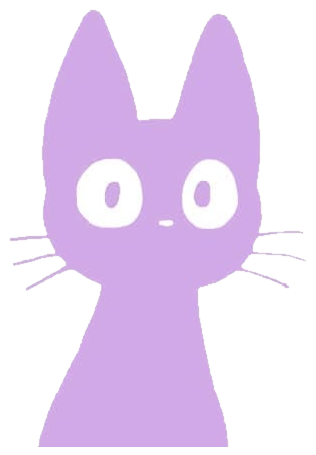
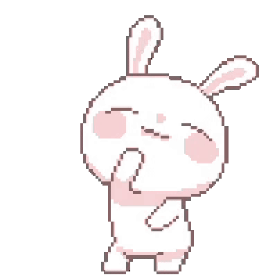
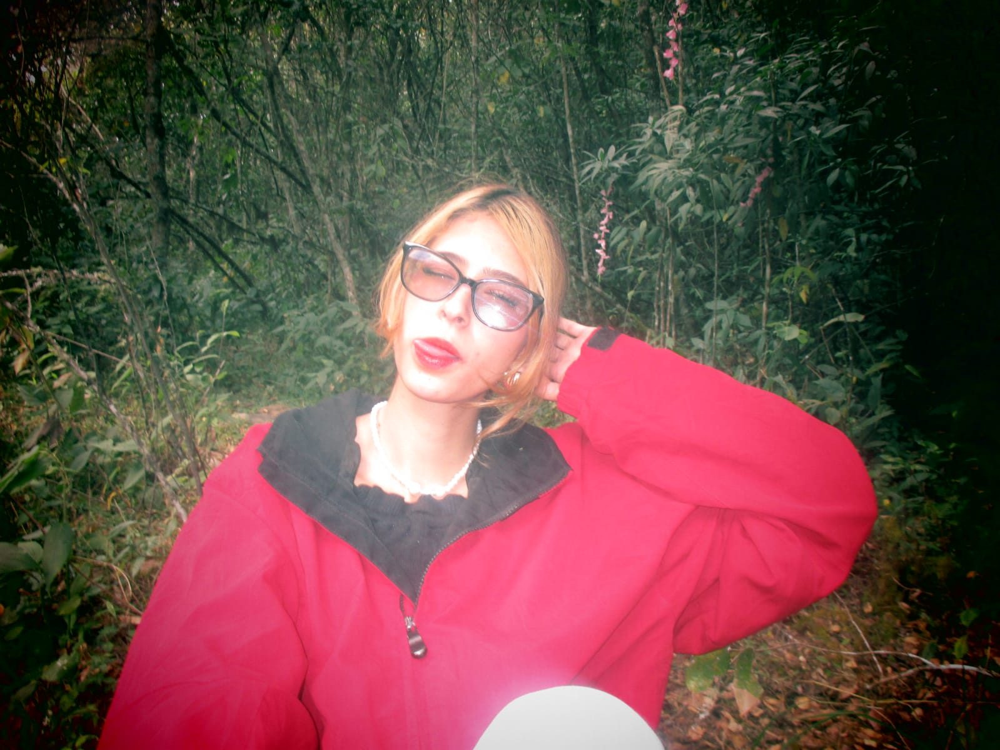
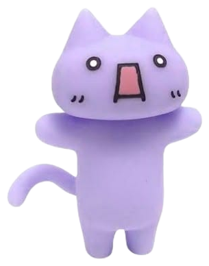
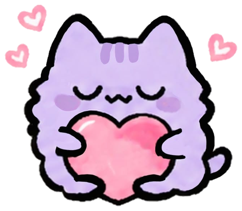
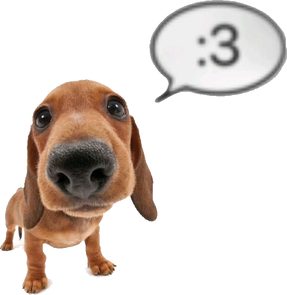
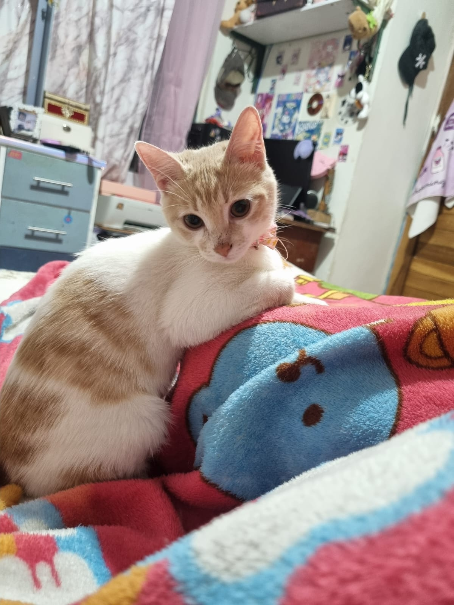
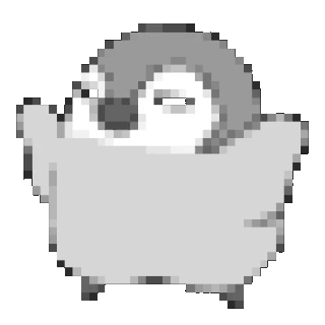

My favorite singer
Álvaro Díaz
If you don’t know Álvaro Díaz yet, listen to him here.
Listen on Spotify


About Me

Hi, I’m Alexandra Jaramillo. I’m 21 years old, and I’m currently pursuing a Bachelor’s Degree in Spanish and English. If I had to describe myself, I would say I’m someone who truly knows how to listen. I enjoy being there for others, offering support when it’s needed, and creating spaces where people feel comfortable just being themselves.

My Soundtrack
A big part of my day revolves around music; it is easily what I do the most from the moment I wake up. Even though I like listening to a bit of everything and discovering new sounds, my daily playlists basically come down to two very different worlds that I love: the rhythm of salsa and the music of Álvaro Díaz.
My favorite singer
If you don’t know Álvaro Díaz yet, listen to him here.
Listen on Spotify
My Kids

Outside of university life, my home is full of energy thanks to my four pets, whom I truly see as my children. They are a huge part of my daily routine and peace of mind. I have two dogs, Cobain and Trueno, who always keep things lively; a cat named Badi, who always melts my heart with tenderness; and a bird named Pollo that brings even more music into the house.

Cobain · dog

Trueno · dog

Badi · cat

Pollo · bird

Looking Ahead
To me, learning and teaching languages goes far beyond memorizing grammar rules or structures. It is about connecting with people's stories and understanding different ways of seeing the world. As a future educator, I see myself building empathetic, engaging, and human-centered classrooms where making mistakes is never something to fear, but rather a natural step in the learning process. I want to be a teacher who not only shares knowledge in Spanish and English, but who also actively listens to her students, respects their individual learning rhythms, and encourages them to find their own voice through language.